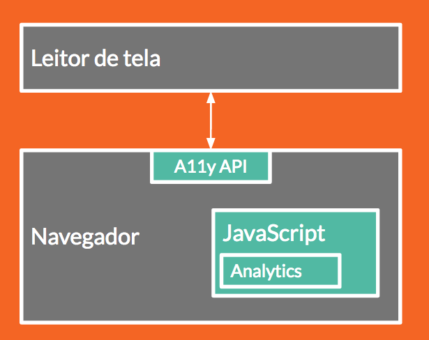

Testando acessibilidade
Publicado em:
@luiz
Assim como muitos times front-end no mercado afora, nosso time despertou para a questão de acessibilidade recentemente. E, nesse processo, tivemos muitos aprendizados, e descobrimos que, quando se fala de acessibilidade, uma questão essencial é: como testar? Vejamos como foi esse processo aqui.
Acessibilidade: o início
Começamos a abordar a questão de acessibilidade por iniciativa de alguns indivíduos do time. A Aline Lee usou o hackday (tempo reservado em cada sprint para o time de engenharia se aperfeiçoar e inovar) para investigar e melhorar a acessibilidade por teclado no cabeçalho do site.
O Raphael Oliveira escreveu diversos posts sobre técnicas relacionadas a acessibilidade, tais como WAI-ARIA e HTML semântico. Desde então, estamos estudando e compartilhando conteúdo sobre acessibilidade de forma contínua dentro do time. Mas entre a teoria e a prática existe um grande abismo.
Primeiros testes
O time todo foi ganhando consciência da importância de tornar o site do Elo7 mais acessível, e o assunto surgiu em uma retrospectiva; decidimos partir para a prática. Para garantir que entregaríamos telas mais acessíveis, colocamos mais um tópico no nosso critério de pronto: a tarefa tinha que ser testada no quesito “acessibilidade” também.
E aí começaram os problemas: como testar? Como saber se está realmente acessível? Será que os usuários vão usar dessa forma? Quando realmente colocamos nosso conhecimento à prova, vimos que acessibilidade não é tão simples como parece.
Apesar de conhecer a ideia de leitores de tela, não sabíamos usá-los adequadamente; o mesmo acontecia com os atributos WAI-ARIA. Além disso, estávamos deixando de fora outros testes importantes, como contraste de cores e a facilidade de encontrar as informações na página. Tudo isso só fomos descobrir depois, quando paramos para estudar mais a fundo e na prática o que precisávamos fazer.
Então… como testar?
No Elo7, temos a possibilidade de criar grupos de estudos para temas que não conhecemos muito bem e que precisamos colocar em prática. Criamos, então, um grupo de estudos sobre acessibilidade e começamos os estudos pela nossa primeira dificuldade: como testar?
Normas e diversidade
Antes de mais nada, precisávamos entender que teste de acessibilidade vai muito além de teste com leitor de tela. Acessibilidade busca atender as mais diversas limitações, físicas e cognitivas. Apenas para citar algumas: daltonismo, surdez, baixa visão, cegueira, problemas de coordenação motora, déficit de atenção e epilepsia.
Um vídeo que ilustra isso muito bem foi elaborado pela Apple, e mostra também a importância de se pensar em acessibilidade:
Para lidar com tamanha diversidade, recorremos a especificações que falam sobre acessibilidade, como a Section 508, norma nos EUA, e a WCAG 2.0, norma internacional.
É de se esperar que, com tanta diversidade, as normas sejam bastante amplas, como de fato são. Vendo isso, recorremos a ferramentas que pudessem nos ajudar a detectar violações a essas normas. Encontramos algumas bastante interessantes, como o achecker, o WAVE (Web Accessibility Evaluation Tool) e o Lighthouse, e, com elas, percebemos alguns problemas de acessibilidade bem impactantes e simples de serem resolvidos, como a falta do atributo lang na tag <html> (já corrigimos!). São ferramentas que podem ser (e que serão) integradas aos testes automatizados do sistema para garantir um nível mínimo de acessibilidade.
Mas, assim como testes de unidade e de aceitação nem sempre pegam todos os problemas possíveis, também percebemos que alguns problemas de acessibilidade mais difíceis de detectar, que dependiam da interação do usuário, ficavam de fora. As próprias ferramentas indicam muitos pontos de atenção, ou seja, pontos que elas sozinhas não conseguem determinar se são problemas ou não, e que exigem a verificação manual do desenvolvedor.
Testes manuais e a variedade de leitores de tela
Para fazer uma verificação manual, buscamos entender como os usuários com algum tipo de limitação usam a web, em especial usuários de leitores de tela. E aí descobrimos a diversidade de leitores que existem, e como a combinação de leitor com navegador e sistema operacional aumenta bastante a complexidade dos testes. Por exemplo, podemos ter as seguintes combinações:
| Sistema Operacional | Leitor de tela | Navegador |
|---|---|---|
| Windows | NVDA | Chrome |
| Windows | JAWS | Chrome |
| Windows | NVDA | Internet Explorer |
| Windows | JAWS | Internet Explorer |
| OSX | VoiceOver | Safari |
| OSX | VoiceOver | Chrome |
| OSX | ChromeVox | Chrome |
| Linux | Orca | Firefox |
| Linux | Orca | Chrome |
| Linux | ChromeVox | Chrome |
A tabela acima lista apenas algumas das mais comuns, e vale observar que a maioria dos leitores de tela funciona apenas em um sistema operacional específico. Ainda assim, a gama de possibilidades que nossos testes precisam cobrir aumenta bastante quando os consideramos!
Chegamos a cogitar a coleta de métricas sobre o uso de leitores de tela em nosso site, mas descobrimos que, além de aparentemente impossível, não é uma ideia legal com nossos usuários. Tecnicamente, o Javascript da página tem acesso à API de acessibilidade do navegador. Essa API é o ponto de contato entre o navegador e o leitor de tela, mas ela não expõe nada sobre o leitor de tela para o código Javascript. Assim, não temos como coletar métricas dessa forma.

Além da dificuldade técnica, tirar métricas com o objetivo de definir alvos de teste pode ser considerado invasivo pelos usuários, afinal expor o uso de um leitor de tela pode ser comparado a expor uma característica pessoal do usuário. Por fim, dependendo dos resultados colhidos, podemos deixar de testar justamente nos cenários em que a usabilidade é pior e, por isso, tem menos usuários. Uma discussão mais ampla sobre esse aspecto pode ser encontrada no artigo Detecting screen readers in analytics, de Heather Burns.
Para amenizar o problema, existem algumas métricas públicas sobre o uso de leitores de tela, como mostra uma pesquisa sobre o uso de leitores de tela realizada pela WebAIM. Podemos nos basear nesse tipo de pesquisa para limitar um pouco o escopo dos testes, e confiar em boas práticas de acessibilidade para compatibilidade com leitores de tela.
Por fim, é interessante observar que não podemos associar o uso de leitor de tela com deficiência visual. Isso é importante para entendermos a importância de uma página acessível para nossos usuários e para fazermos testes mais realistas.
Empatia
Uma vez que conhecemos melhor nossos usuários e as ferramentas que usam, podemos partir para os testes manuais. Então começamos a usar ferramentas como o plugin ChromeLens para o Google Chrome, para avaliar como um usuário com algum tipo de deficiência visual enxerga a nossa página. Usamos o teclado para tentar navegar pela página e executar os passos principais envolvidos em cada tarefa. Ligamos o leitor de tela e prestamos atenção no que é lido para analisar se faz sentido, se está claro, se é fácil entender em que lugar da tela o usuário está num determinado momento. E aqui começam a surgir aspectos mais subjetivos dos testes de acessibilidade. Como lidar com essa subjetividade?
Primeiro, ajuda muito conhecer seus usuários. Isso inclui conhecer bem quais ferramentas assistivas eles usam e como usam. E, para isso, nada melhor do que testar com os próprios usuários.
Infelizmente, isso nem sempre é possível. Por isso, precisamos ser capazes também de nos colocarmos no lugar desses usuários, aprender a usar as ferramentas assistivas e sentir na pele a dificuldade de usá-las. Ou seja, precisamos criar empatia com os usuários para os quais estamos projetando o site, e isso é fundamental para criar um site ou aplicativo acessível de verdade.
E como criar essa empatia? Precisamos ouvir pessoas com necessidades especiais, seja em eventos, entrevistas, artigos, pessoalmente etc. Muitos eventos de front têm falado sobre acessibilidade recentemente, e o TDC SP teve uma trilha só sobre o assunto. Além disso, sites como o empat.io mostram entrevistas com usuários de tecnologia, e é possível encontrar diversos vídeos no YouTube. Por fim, nada melhor do que conviver com uma pessoa com necessidades especiais para entender como ela lida com a tecnologia no dia-a-dia! E, para isso, precisamos ir atrás dessas pessoas e tornar o nosso ambiente de trabalho mais inclusivo. Ou seja, criar um produto mais acessível envolve a empresa toda.
Conclusão
Criar um site ou aplicativo acessível é cada vez mais simples do ponto de vista técnico. Nunca tivemos tantos recursos e acesso a tanta informação! Mas, para garantir o uso efetivo dos recursos disponíveis, precisamos entender nossos usuários e seguir boas práticas de código. Um complementa o outro no processo de tornar uma aplicação mais acessível, um processo que não tem fim pois sempre há o que melhorar e sempre há novas funcionalidades a serem implementadas.
Falando em sempre melhorar, aqui no Elo7 ainda estamos nesse processo de aprendizado, conhecendo as ferramentas, as técnicas e os usuários, e esse post resume um pouco do que aprendemos até agora. Em breve, compartilharemos mais!
E você? Compartilhe conosco: que práticas você e sua empresa têm seguido para tornar seus sites e aplicativos mais acessíveis?